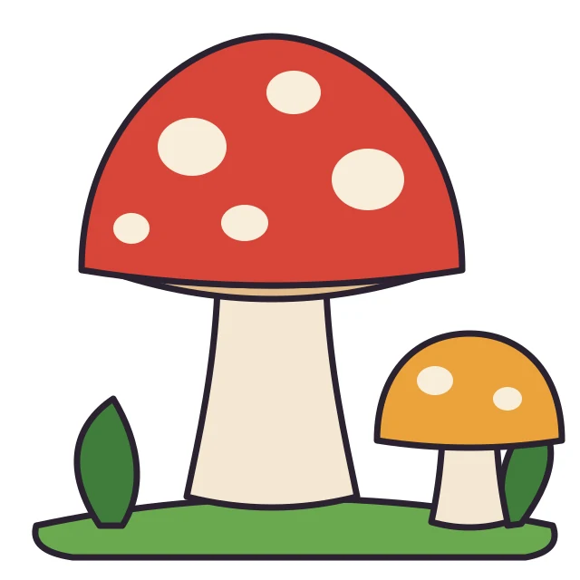
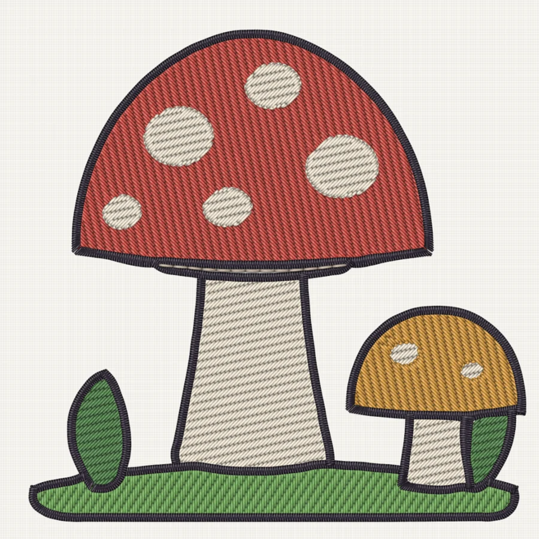

Auto-digitize
Drop in a picture. Get a stitch file.
Meteor reduces a picture to thread colors, traces every area into smooth shapes, and sews it. Dark line art becomes satin outlines, fills tuck under them, and each thread sews together so you change spools less often.
- Objects
- 31
- Stitches
- 9,596
- Threads
- 7
- Every shape keeps curve nodes you can edit.
- Guided mode walks through a picture or SVG piece by piece and suggests a stitch type for each.
- Ink/Stitch SVG files open with their stitch types.

